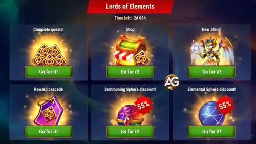

Lords of the Elements is a four-day event group that runs from Thursday through Sunday. Three mission events operate together: Titan's Roar, Elemental Tempest, and United by Power. Their shared currency, Eternal Marks, is spent in the Elemental Forge.
The group is designed as one connected system. Titan's Roar and Elemental Tempest reward normal account development, while United by Power contains meta-quests for completing missions in both. The smartest plan is therefore not to finish one page and then start another; progress all three together and use the Guild VS calendar to make the same action count twice.

The Key Rule: United by Power Rewards Titan's Roar and Elemental Tempest Progress
United by Power includes separate chains for completing quests from Titan's Roar and Elemental Tempest. Every efficient Titan's Roar or Elemental Tempest milestone can therefore create its own reward and move United by Power forward. Check the United by Power meta-chain before forcing an expensive final milestone; you may need only a certain number of affordable quests, not full completion of the first two events.
All Lords of the Elements Guides


How the Event Group Works
1. Prepare Resources
Save flexible resources before Thursday: Rune Stones, Fairy Dust, Summoning Spheres, Hero Skin Stones, Elemental Spheres, Heroic Chests, Tower openings, Talisman resources, and useful upgrades.
2. Complete Titan's Roar and Elemental Tempest
Choose efficient mission milestones in Titan's Roar and Elemental Tempest. Claim their direct rewards, including Eternal Marks and resources that can feed later missions.
3. Advance United by Power
United by Power counts Titan's Roar and Elemental Tempest quest completions while adding Hydra, Heroic Chest, Talisman, Expedition, and event-currency chains.
4. Spend in the Forge
Use the final Eternal Marks total in Elemental Forge. Secure rare priorities before spending leftovers on materials available through normal gameplay.
Best Thursday-to-Sunday Plan
| Day | Best Event Actions | Why This Day Matters | Important Limit |
|---|---|---|---|
| Thursday | Start all three events; spend useful Rune Stones; fight Arena and Grand Arena; open planned Heroic Chests; convert already claimed Rune Spheres and Titan Skin Stones. | Elemental Tempest overlaps with Rune and Arena tasks, while United by Power Heroic Chests score 4,000 Guild VS points each. | Do not force the 450,000 Rune Stone or 80-battle Arena caps unless the account benefit justifies the cost. |
| Friday | Spend Fairy Dust and Hero Skin Stones; use saved Summoning Circle summons; begin Expeditions; equip a completed Red item only when available. | Titan's Roar aligns strongly with Friday's Fairy Dust, Summoning Circle and Hero Skin tasks. United by Power adds 5,000 points per qualifying Expedition start. | Fragments are not a Red item until the complete equipment can actually be equipped. |
| Saturday | Repeat the chosen daily Tower chest target; use earned Titan Potions and Mastery Crystals; finish sensible Arena goals; coordinate Hydra or Golden Horn actions. | Tower chests score 4,000 points each, while resources claimed across Titan's Roar, Elemental Tempest and United by Power can be converted into Saturday Guild VS points. | Hydra does not automatically count as the Guild VS Boss task unless the live game credits it. |
| Sunday | Claim the fourth login; finish Titanite, Soul Stones, Hydra, Talisman, Expedition, Titan's Roar/Elemental Tempest meta-chain, and affordable event milestones. | Sunday is the cleanup day for the event group. | Guild VS has no Sunday tasks, so do not save a flexible scoring action expecting points. |
The strongest day depends on the resources already saved. Thursday, Friday and Saturday all provide excellent overlaps; Sunday is reserved for event-only completion.
Alexandre's Recommended Order Each Day
- Open United by Power first and check how many Titan's Roar and Elemental Tempest quest completions the next meta-milestone requires.
- Open the matching Titan's Roar or Elemental Tempest guide and complete only the efficient milestones for that day's Guild VS tasks.
- Claim rewards before spending newly earned Rune Stones, Titan Potions, Mastery Crystals, or event currency.
- Return to United by Power and collect any unlocked meta-rewards.
- Wait until late in the event before using Eternal Marks, unless one shop purchase immediately improves your main team.
The Three Lords of the Elements Events
Titan's Roar
The broad account-development branch: logins, VIP Points, Guild Activity, Fairy Dust, Summoning Circle summons, Tower chests, Hero Skin Stones, and Hero Soul Stones. Its strongest overlaps appear Friday and Saturday, while the Tower Trophy chain resets daily during this four-day cycle.
Elemental Tempest
The premium and competitive branch: logins, VIP Points, Emeralds, Titanite, Elemental Spheres, Rune Stones, Arena, and Grand Arena. Thursday is the key day for Rune Stones and both Arena modes, but the largest milestones are optional rather than mandatory.
United by Power
The connector branch: logins, Hydra actions, spending event coins, Heroic Chests, Talisman rerolls, Expeditions, and completing Titan's Roar/Elemental Tempest quests. It rewards coordination and sensible progress across the entire event group.
Eternal Marks and the Elemental Forge
Eternal Marks are the shared shop currency earned throughout Lords of the Elements. They are spent in the Elemental Forge, which remains available for approximately 24 hours after the event ends.
In the supplied Summer Glory lineup, the rarest long-term targets include Relic Shards for Lian, Oya, Jhu, and Alvanor; Orm and Umbra progression; Elarite and Summoner Artifact fragments; and Primordial Skins for Iyari and Mort. The correct purchase order depends on the account.
- Intermediate and advanced accounts: compare Hero Relic Shards first.
- Developing Titan accounts: prioritize rare Orm Elarite artifacts, followed by Umbra Summoner artifacts.
- Dedicated Light teams: buy Iyari only when a near evolution breakpoint is more valuable than rare shop-exclusive progress.
- Avoid the trap: Sparks of Power accumulate naturally and should remain at the bottom of the list.
What to Save Before Thursday
| Resource or Action | Main Event Use | Best Planned Day |
|---|---|---|
| Rune Stones and Rune Spheres | Elemental Tempest Power Balance and conversion of claimed rewards | Thursday |
| Fairy Dust | Titan's Roar Hidden Reserves | Friday |
| Summoning Circle summons | Titan's Roar Summoning Titans | Friday |
| Useful Hero Skin upgrades | Titan's Roar Price of Power | Friday |
| Heroic Chests | United by Power Heroic Discovery | Thursday |
| Elemental Spheres | Elemental Tempest Awakening | Complete efficiently across the event |
| Tower chest budget | Titan's Roar Tower Trophy | Repeat daily; Saturday adds Guild VS |
| Talisman rerolls | United by Power Transforming Talismans | Any safe event day |
| Expeditions | United by Power Beyond Horizon | Friday when possible |
| Hydra Horns / Golden Horns | United by Power Taming Hydra | Coordinate with the Guild; Saturday can help resource conversion |
Do Not Treat Maximum Completion as the Goal
Opening 500 Elemental Spheres, fighting 80 times in each Arena mode, spending 450,000 Rune Stones, earning high VIP totals, or buying every Tower chest are premium-scale targets. A successful event means turning resources your account already needs into multiple layers of rewards—not sacrificing months of progress just to clear every row.
Lords of the Elements FAQ
Do Titan's Roar, Elemental Tempest and United by Power run at the same time?
Yes. In this supplied cycle, all three are active during the same Thursday-to-Sunday window, allowing Titan's Roar and Elemental Tempest quest completions to advance United by Power.
Which event should I open first?
Check United by Power first because its meta-chains tell you how many Titan's Roar and Elemental Tempest quests are needed. Then use the detailed Titan's Roar and Elemental Tempest guides to choose the least expensive useful milestones.
Should I spend Eternal Marks immediately?
Usually no. Wait until you understand your final currency total and the live Elemental Forge lineup. Spend early only when a purchase creates an immediate and important team upgrade.
What happens after Sunday?
The event missions end after Sunday. The Elemental Forge is shown as remaining open for approximately another 24 hours, but confirm the live timer and do not risk losing unspent currency.
Is Sunday a good spending day?
Sunday is useful for event cleanup, but Guild VS is inactive. Move any flexible action to Thursday, Friday, or Saturday when it can also earn Guild VS points.
 Titan's Roar
Titan's Roar Elemental Tempest
Elemental Tempest United by Power
United by Power